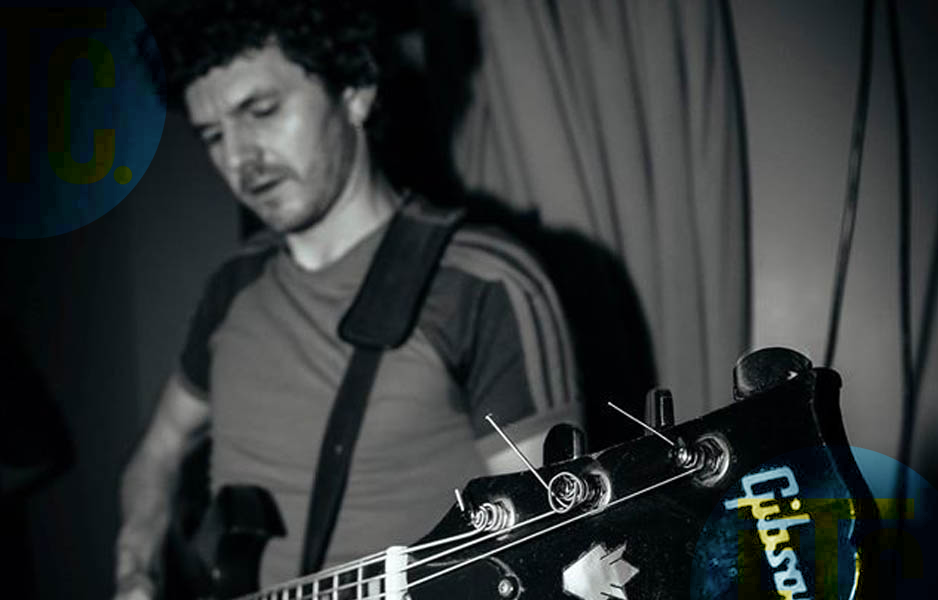
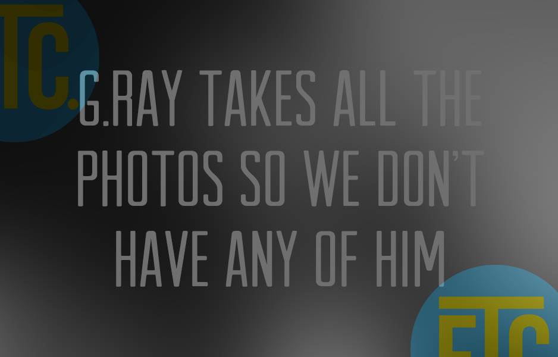
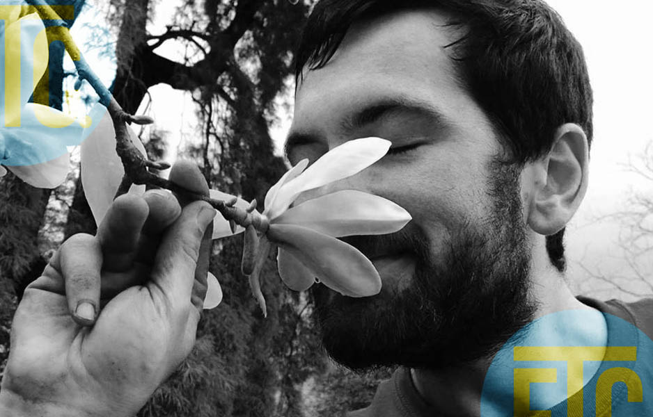
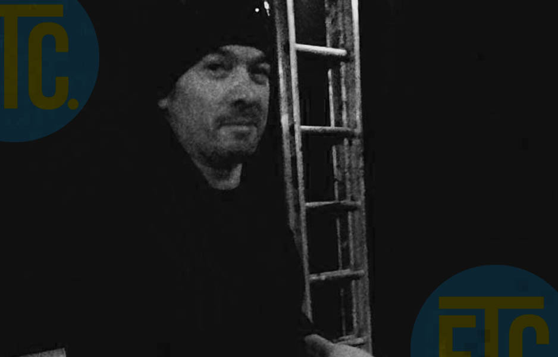

Members of ETC
Fin "The Anchor" Divilly
When not making eight ball clearances on the baize of the Hacienda's pool table or being late for meetings in his very own bedroom, he's munching lasagne, at a reduced price, in La Dolce Vita. He's the charm of Liffey Street, Ireland's sweetheart, the anchor of Etc., rarararararararara rarararara rarararararara
Johnny Filth
Found washed up on the banks of the Liffey with a distortion pedal and a quiver full of riffs, rumour has it he was kicked out of Montreal because his guitar playing was too filthy. Johnny Filth dislikes cabaret music and the 12 bar blues but he has been known to wash his vitamins down with wine...
Fionn "The Groove Machine" McClean

He's the keeper of the beats and the setter of grooves. Born out of the static of the Electric Picnic, with a fully operational reggae beat system, he can be found harvesting coffee beans with Brian Wilson on a summer's eve beyond Gormenstowns…..when he should be rehearsing.
Baba Gaga Ray Vaughan Jr. Page (G.Ray)
The love child of Marc Bolan and Stevie Ray Vaughan, he was raised by musical spirits Tommy and Trish. Originally born out of the sounds of the National Concert Hall, he now handles the violin bow like a magic wand of unadulterated rock n roll. He is the bringer of the chartsy, chairer of the M.G.Ms, and a trigger happy media maverick. He was once babysat by Jimmy Page.
Leo "The Funk Jaw/Setlist" Walsh
Devourer of odours and hater of cows, he can be found exploring the habitats of bass tones and plants. They say he is so wise that he was forced by MI5 and the F.B.I to have all 4 wisdom teeth extracted for the sake of St. Anne's Park. Can also be found with fingers in the soil but ultimately prefers plants to people.
Alias: Stu or Basspuss
Tomo "The Sound Sculptor" Rooney (God complex pending)
Born and raised by Lions in south central Africa, he was found by Fin “The Anchor” Divilly in the depths of the Amazon forest (information regarding travels between Africa and South America is unknown) recording the sounds of nature. Brought back to Dublin as ETC.'s Sculptor and Capturer of sound he is the personal wifi hub and dasher of egos the band needs. To some he's dreadserver.